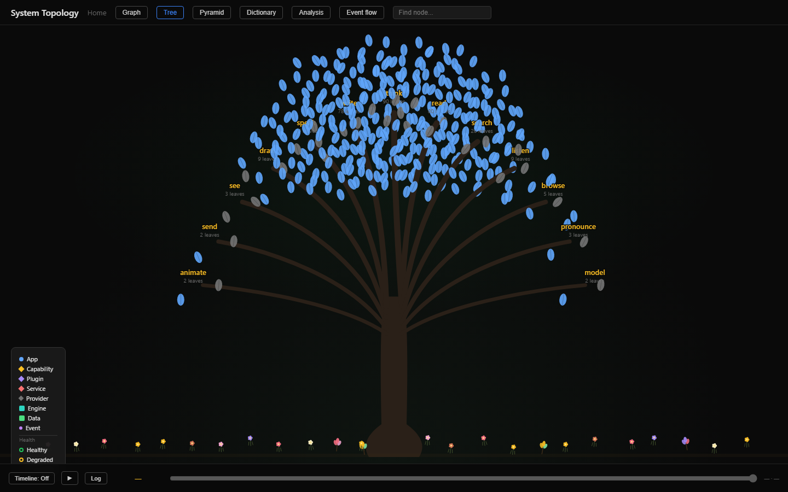
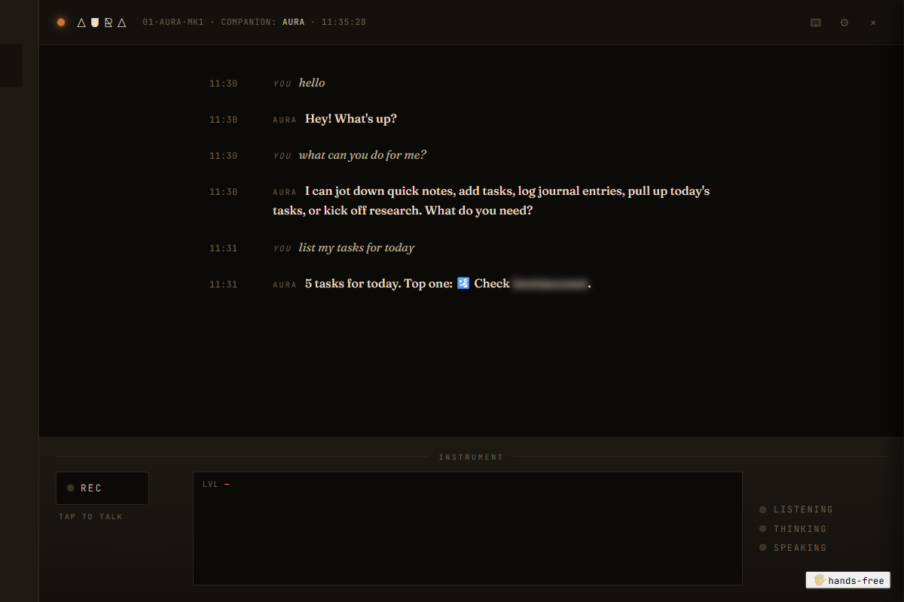
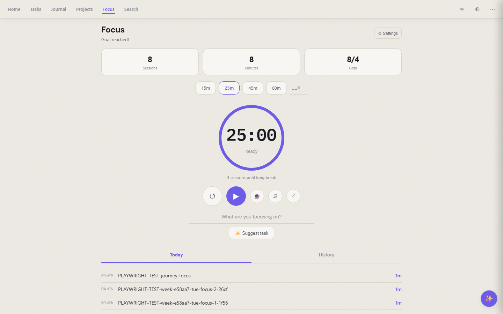
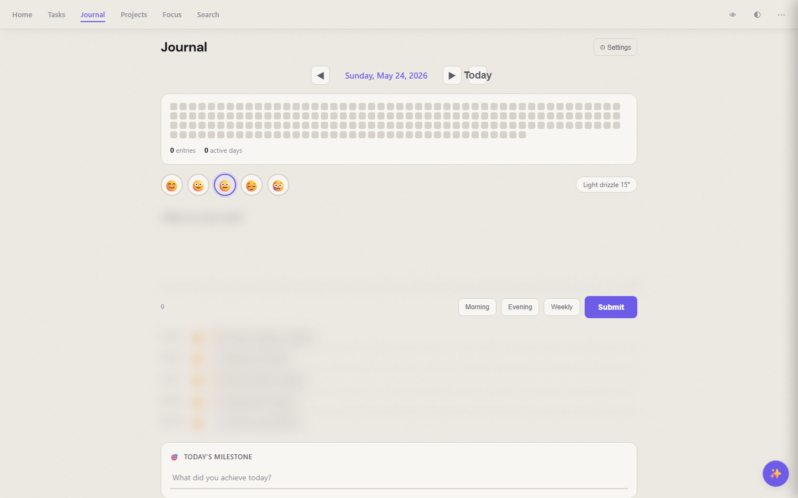
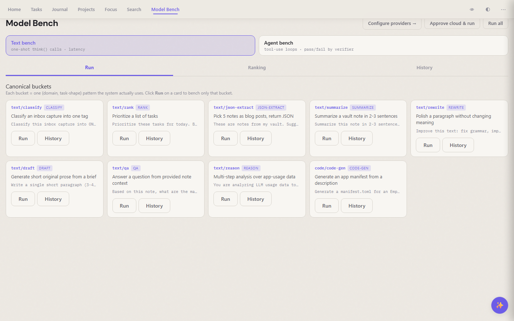

EmptyOS
The demo link signs you in to a public sandbox with sample notes — feel free to break things, but don't put real data in it.
Generated 2026-04-27 from live system state.





Ask AI anywhere
Every app can write, search, and answer for you. Use a free local model when you want privacy, a cloud model when you want power — the system picks the right one and tells you what it used.
Your notes stay yours
Everything lives in plain text files on your computer. Open them in any editor. Back them up however you like. Walk away from EmptyOS and you still have all your writing.
It grows with you
The system watches itself: noticing what you use, suggesting where to clean up, adding small features as you ask for them. You shape it; it doesn't shape you.
Works offline, talks to anything
Runs on your laptop without an internet connection. Plug in extras when you want them — voice, image generation, phone notifications, a code assistant — each one optional.
Every feature has a screen
You can do anything from a browser tab. Keyboard shortcuts, themes, live updates. No command line needed unless you want one.